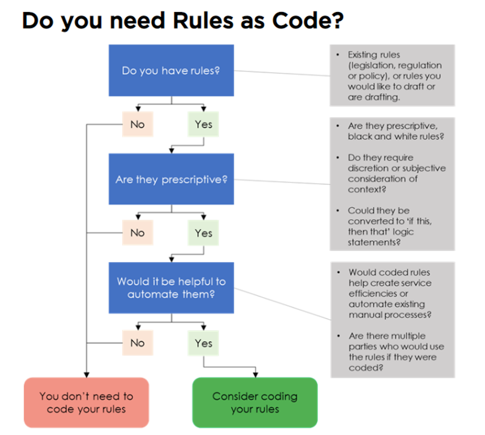
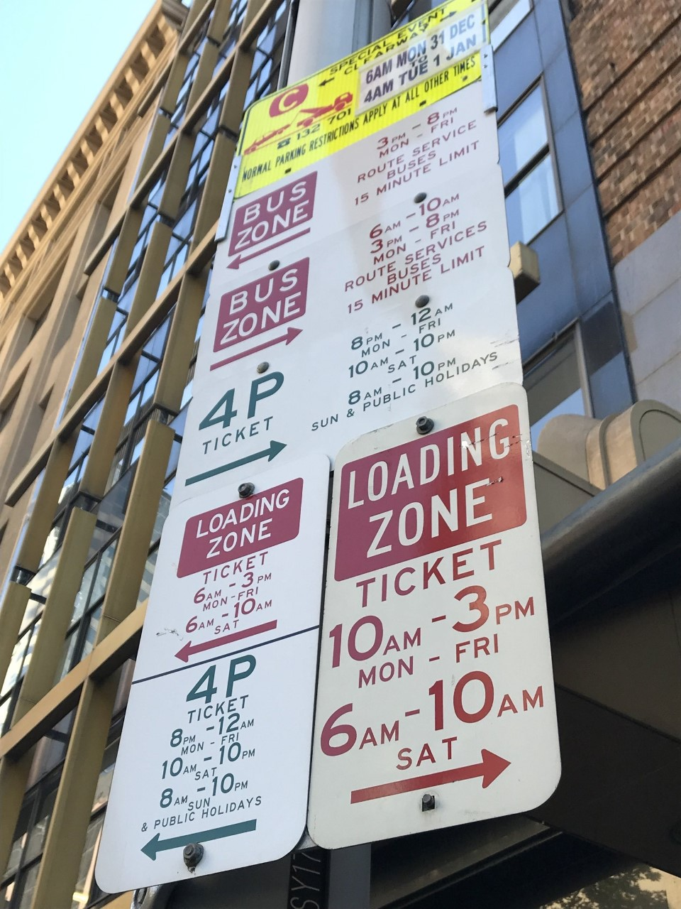
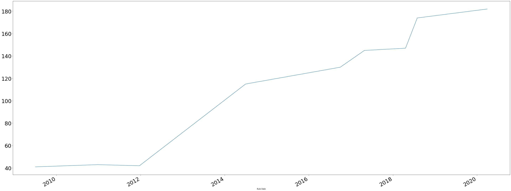
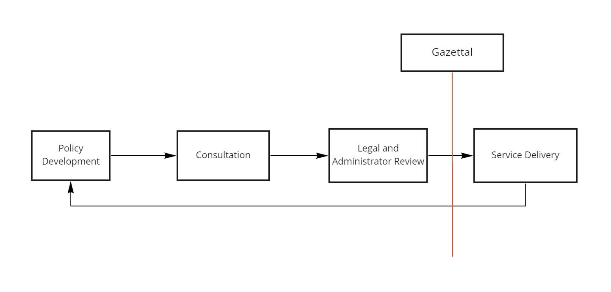
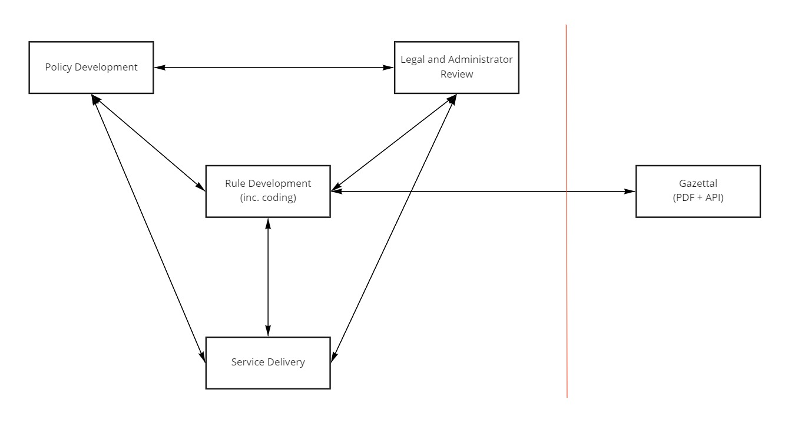

Rules as Code
Where we're at - June 2020
Liam McCann
https://energy-savings-scheme.github.io/2020-06-28-RaC-DPIE-update
Contents
What is Rules as Code?
In short - it's translating prescriptive rules into machine-readable computer code
Perspective rules are those which can provide definitive answers to questions - for example, yes/no questions, calculations, logic, etc.
Do you need Rules as Code?
Sourced from: https://www.digital.nsw.gov.au/digital-transformation/policy-lab/rules-code
Why code rules?
Rules are often complicated, difficult to understand, and create barriers to accessing services or programs which the rules are designed for.
An example of a complex ruleset in practice.
And in many cases, become increasingly complex over time.
The length in pages of the ESS Rule over time, from 2009 to 2020.
The promise of Rules as Code is...
- Help people understand the rules
- Enable further digital solutions
- Make compliance easier
- For the ESS, create further energy savings
Rules as Code is already happening
- Department of Customer Service - Community Gaming, Better Regulation Division and more...
- New Zealand - Social Security Entitlements
- France - social benefits, tax reforms
- Even eTax is a form of Rules as Code (through coded tax regulations in an app)
What does it look like - in practice?
This is a questionaire that can be used to determine what financial help you're eligible for in New Zealand, created using Rules As Code
The value for the ESS is...
We can use Rules as Code to inform implementation of the Rule.
What we've done so far is...
Worked with DCS to learn how to build a Rules as Code coding environment.
Coded the NABERS method of the Rule (for Offices and Apartments).
Built test cases for the use of this method.
Reviewed the code with Legal.
Started the process of building a proof of concept webform.
Started planning the next sections of the ESS to code.
A simple example of the value of our current work.
There's a term "Counted Energy Savings" in the NABERS method of the ESS.
It appears twice - and it's defined slightly differently both times it appears.
The difference in meanings is summarised below.

Strictly following the existing definitions of Counted Energy Savings within the Rule, it would be impossible to calculate ESCs within NABERS because of this ambiguity - the machine would be unsure of what definition to use.
Benefits beyond making the code publicly available:
Establish hierarchy, structure and connections between terms used throughout the Rule
to ensure consistency in the meaning of these terms
Benefits beyond making the code publicly available:
Testing the interpretation of the rules with non-subject matter experts
to ensure clarity of interpretation across the different stakeholder groups
Benefits beyond making the code publicly available:
Test coding the written rules into machine-readable language
to remove ambiguity for when users do the same
We've found that coding the rules is the easy part.
But it’s only part of developing Better Rules.
Better Rules
The Better Rules framework provides a template for how we can do rule changes
and
Coding the rules will transform how the rules operate and are implemented.
The current rule change process is very linear.
Here's a simplified version of the current process.
https://www.digital.govt.nz/dmsdocument/95-better-rules-for-government-discovery-report/html
https://trends.oecd-opsi.org/embracing-innovation-in-government-global-trends-2019.pdf
https://trends.oecd-opsi.org/embracing-innovation-in-government-global-trends-2019.pdf
The end goal is to use an integrated Better Rules approach to build a better end product.
The key is integrating the perspectives and knowledge of different experts to ensure the rules deliver the best outcome for the user, following rule implementation.
What's next?
Testing this prototype with NABERS stakeholders
Begin scaling this approach throughout the rest of the current ESS Rule
Integrate the Better Rules approach into Safeguard development and delivery
Thank you!
Happy to take any questions you may have!